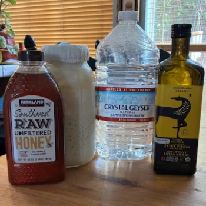
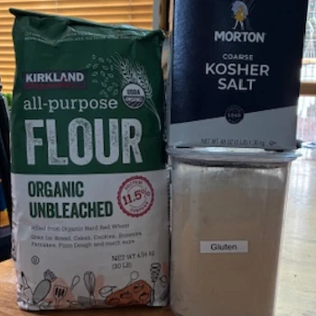

Ingredients and Equipment

Hello
Good !
Welcome to my information site about my product: 3-Day Sourdough. This page focuses on the ingredients and equipment I use and why I use them.
Ingredients
Wet Ingredients
- 150-170g Sourdough Starter, Active: The recipe calls for 150g or sourdough starter. Since it is difficult to pour out an exact amount of starter, I use 150g minimum but no more than 170g.
- 325g Spring Water: Spring water seems to make the sourdough happier. When I originally began my starter, I experimented with tap water and purified water, the sourdough grew best with the spring water. I purchase this at WinCo Foods.
- 25g Honey: I use raw unfiltered honey because I like to use products as close to natural as possible. The less processed my food is, the happier my tummy is. I purchase this at Costco Wholesale.
- 20g Extra Virgin Olive Oil: I try to use EVOO in my baking and cooking whenever possible. My blood work improved at my last check-up by eliminating all oils except Olive Oil, Avocado Oil, and Coconut Oil. I purchase this at Costco Wholesale.
Dry Ingredients
- 500g (-1 TBS Gluten) Organic unbleached All-Purpose Flour: I use organic unbleached flour to avoid the bleaching chemicals and pesticides that can be found in other flours. I purchase this at Costco Wholesale.
- 1 TBS Vital Wheat Gluten: Bread Flour contains higher quantities of gluten. I like to add the additional gluten myself, so I control the quantity. I purchase this at WinCo Foods in their bulk section.
- 10g Kosher Salt: I use kosher salt because it has a more consistent taste than sea salt, is less salty than table salt, and does not contain additives. I purchase this at WinCo Foods.